#变换(Transformation)
变换分为两种：Modeling（平移、旋转、缩放等）和 Viewing（3D 投影到 2D）
#模型变换(Modeling)
先讨论二维的情况。
在二维平面图上，所有的 modeling 都是基于原点 的。
#缩放(Scale)
对于原图像上任意一个点 ，其缩放后的坐标为 。其中 分别表示 方向上的缩放倍率。
用线性代数的方式表示就是：
#镜像(Reflection)
考虑下面这张图
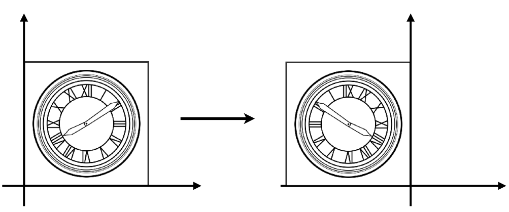我们也可以得到下面这样一个线性表达式：
#旋转(Rotate)
考虑下面这张图：
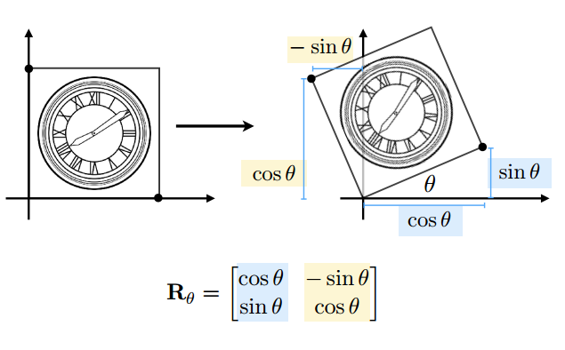我们可以采用特值法，，代入 求解，从而得到：
这里如果改变旋转方向，从逆时针改为顺时针，那么矩阵 应该代入 ，得到
事实上改变方向，角度不变的两个旋转应该互为逆操作，所以也有
易得，旋转矩阵是一个正交矩阵。
#切变(Shear)
考虑下面这张图：
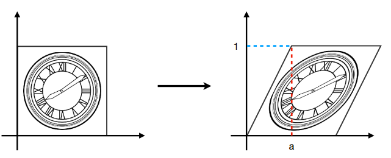坐标在 方向上的偏移量与其纵坐标的大小有关，并且呈线性关系，同时纵坐标又不会发生偏移，那么很容易能够得到下面这个关系：
#齐次坐标与平移(Translation)
上面这些都属于线性变换，都可以通过 的方式来表示，但这并不适用于「平移」操作，比如下面这张图：
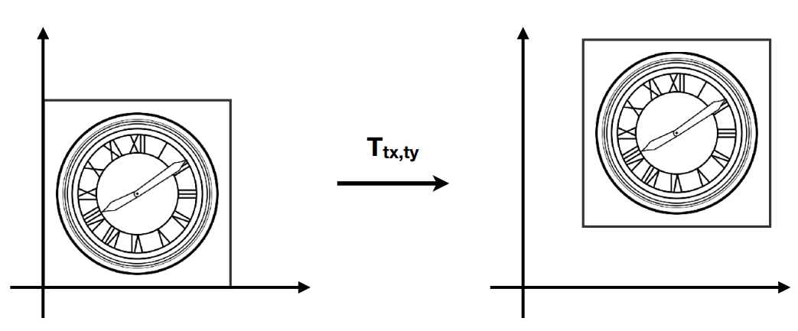我们之前讨论的变换，不难发现图像在变换前后， 处的点是不动的，但平移不然。我们似乎不能通过 使得 。换句话说，平移并非线性变换，其需要的「变换」应当为
于是科学家引入了「齐次坐标」，对于二维的点/向量，为其增加第三个坐标 。当 时，表示点； 时，表示向量。
那么对于图像上任意一个点，对其进行平移操作，相当于做了下面这样的变换：
得到的结果依然是一个「点」的形式。而对于向量而言，因为 ，那么有
-
vector ± vector = vector
-
point - point = vector
-
point + vector = point
从而能够满足向量的平移不变性。
那么 point + point 呢？我们定义当 时， 等同于点 。易得两点相加得到该两点所成线段的中点。
#仿射变换(Affine)
根据齐次坐标，我们能够把式(1)改写为：
即线性变换+平移。这样就用一个形式统一了所有的变换。
-
缩放:
-
旋转:
-
平移:
#逆变换(Inverse)
相当于左乘一个逆矩阵。
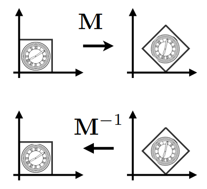#对变换进行压缩(Composing Transforms)
根据上面的结论，左乘一个仿射矩阵相当于进行相应的变换。我们知道矩阵是有结合律的，一系列变换相当于不断左乘对应的矩阵，那么左侧所有矩阵的乘积就是这一系列变换的总和。
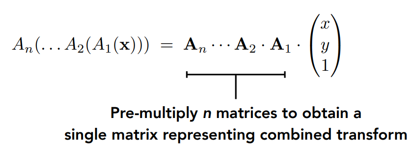再考虑下面两种情况：
-
先平移后旋转；
-
先旋转后平移；
两者得到的结果并不一样。这是矩阵不满足交换律导致的，即
如果希望图像围绕一个特定的点 进行旋转，那么可以先平移至与原点对齐，旋转后再回到原来的位置，即
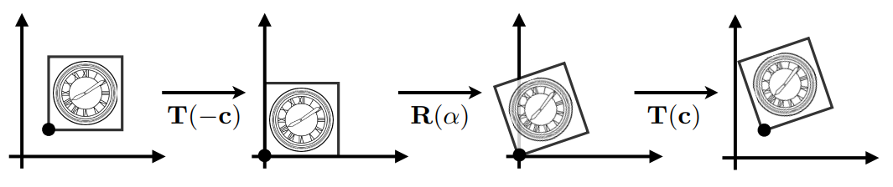#推广到三维空间
也是一样的，都需要进行一个坐标的拓展。对于三维坐标系而言，其仿射变换长下面这样：
-
缩放:
-
旋转（往轴负方向看逆时针）:
- 绕 轴：
- 绕 轴：
- 绕 轴：
-
平移:
三维空间的旋转比较特殊，因为需要考虑绕某个轴旋转（二维旋转可以视为有一条虚拟的 轴，方向垂直纸面向外，所有的旋转都是绕该轴进行的）。
有的科学家用飞机来模拟三维空间的旋转，并为其进行命名：roll，pitch，yaw。
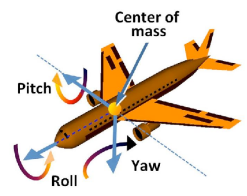
#罗德里格斯旋转公式(Rodrigues’ Rotation Formula)
参考罗德里格斯旋转公式。
#观测变换(View)
#相机的放置
要做观测变换，首先要解决「如何放置相机」这一问题。一般由以下三个属性在空间中唯一确定一个相机：
-
位置(position)：；
-
朝向(gaze direction)：；
-
上方(up direction)：；
另外还有一个关键属性：相对不变。即如果相机和所有的物体保持同样的移动，那么得到的观测（照片）永远一致。常用的做法是将相机变换到下面这样的初始状态，其它物体也做同样的变换。
把人头当作相机，观测结果就是我们日常画的二维坐标系。上面这个是约定俗成的，能够使观测变容易。
#相机变换
为了让任意位置的相机都能达到初始状态，需要进行一定的变换（称之为 ）
-
将 移至原点；
-
将 旋转至 ；
-
将 旋转至 ；
-
将 旋转至 ；
不难得到 （先平移后旋转）。
其中
那么旋转矩阵要如何表示呢？发现正着来不太好写，那不如倒着来，先考虑逆操作，即 ，分别代入特殊值可以得到
矩阵分别乘 能得到
之前我们讨论过，二维旋转矩阵是正交矩阵，其实这一性质对三维同样成立，所以有
#投影变换(Projection)
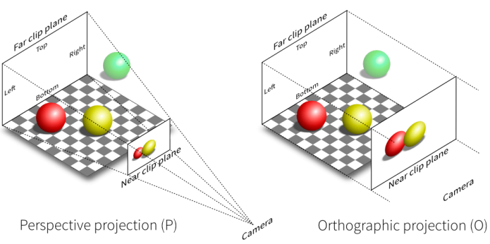透视投影会形成视角锥，正交投影假设相机置于无穷远处。
#正交投影(Orthographic projection)
在计算机图形学中，为了节省计算资源，会定义一个可视空间，只有可视空间内的物体才需要进行绘制。正交投影定义的可视空间是一个盒状可视空间，本质上是三维物体的外切立方体，其长宽高分别由区间 确定。
所谓正交投影，其实就是已知该可视空间内的任意点，将其垂直投影到 平面并求解对应点的坐标。一种朴素的思路是直接舍弃 坐标，但这样做在有前后遮挡的情况下会出现错误的绘制结果。
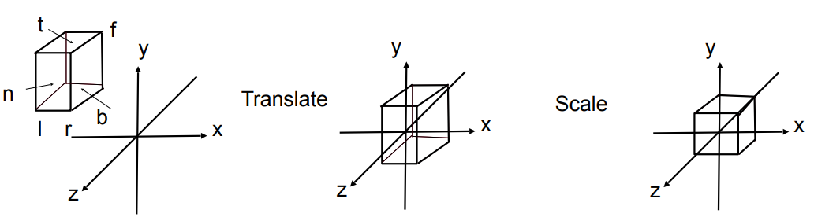现代化做法是像上图这样。首先将可视空间平移至以原点为空间中心，再对长宽高进行归一化。
不难得到两步操作之和的变换矩阵为
归一化是因为，现实情况几乎所有的图形系统都把坐标系的空间范围限定在 范围内，这么做是为了方便移植，使坐标系独立于各种尺寸的图形设备。
我们这里是右手系，所以有反直觉的 ，有的引擎采用左手系（相机看向 正向），从而 ，更加符合直觉。
#透视投影(Perspective projection)
透视投影符合我们日常视角，即近大远小，且平行线不再平行，视觉效果看会收束到一个点。
闫神提供的解法是，将相机视锥形成的四棱台**压缩(squish)**成盒状，再应用正交投影即可。
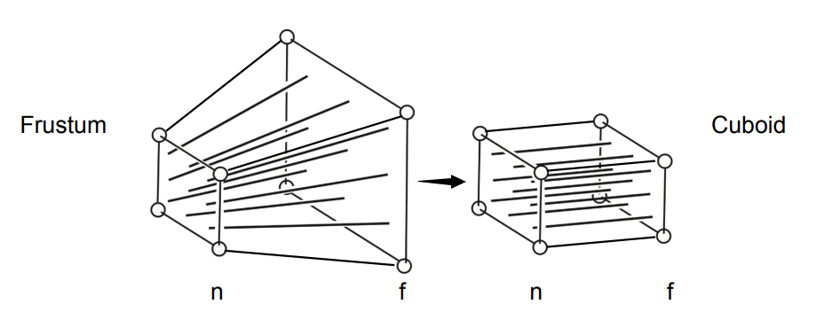👈推导过程自行点击查看
对于视锥范围内的任意一点 ，从原点作一条直线经过该点的直线（即视线），与近裁切面相交于点 。基于正交投影的性质，我们希望点 在经过 squish 后的点 满足 。
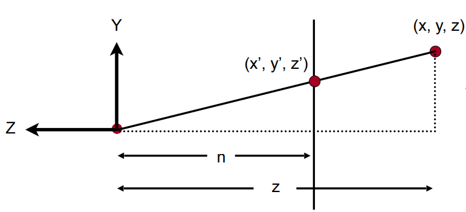根据相似三角形，不难得到
在齐次坐标下，我们得到这样一个变换关系：
从而有
接下来就是求 squish 矩阵的第三行元素。由于在 squish 前后，近裁切面和远裁切面上的所有点保持不变，所以我们可以代入两个特殊点进行求解，一个是近裁切面上的点 ，一个是远裁切面上的点 ，从而得到
得到 ，同理 ，最终解得
即
最终得到透视投影变换矩阵为
❗提问：视锥内任意一点 在 squish 后是靠近 平面还是远离？
不妨代入式子求解，计算得到新的点为 ，我们只需要判断 和 的大小关系即可。
令
当 时， 恒成立，即 ，表示远离。结论呼之欲出。
在上面我们定义了远近裁切面，并对其作了相应映射操作。但还有一个问题我们没有解决，那就是如何定义近裁切面的大小。
近裁切面其实就是相机的视口(View Port)，可以用两个参数：**视角(fovY, Field of View)和宽高比(Aspect Ratio)**来定义。
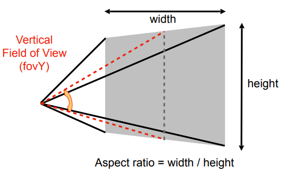 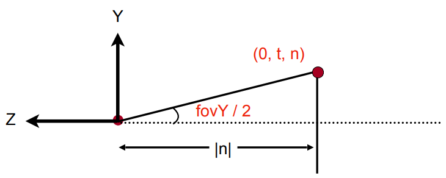当近裁切面在 轴上的坐标 确定后，我们就能得到 squish 后的盒状可视空间的上下左右裁切面坐标值，从而正确应用正交投影的平移/缩放。
#光栅化(Rasterization)
#屏幕映射
屏幕其实就是一个二维数组，数组的每一个元素是一个像素(Pixel, Picture Element)，可以用坐标 表示，其像素中心坐标实际上是 。
对于一个分辨率为 width*height 的屏幕而言，其屏幕空间大小就是 width*height，对应了 width*height 大小的二维像素数组。
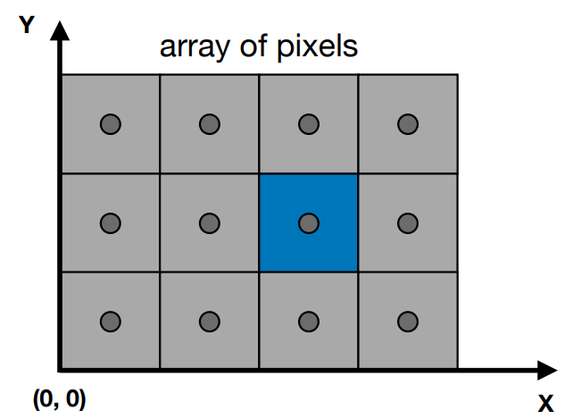我们经过正交/透视投影变换后得到了一个归一化的立方体盒状可视空间（），需要将其 平面上的点映射到屏幕空间（）中。这一步很简单，缩放+平移即可，对应的变换矩阵为。
万事俱备，我们只差将其变成真正的图，也就是说，要将视口中的多边形打散成像素，得到每个像素的值，真正将其画在屏幕上，这就是光栅化。
#光栅化
大部分物体都会采用三角形来组合成对应的多边形，这是因为三角形：
-
是最基础的多边形，任意多边形都可以拆分为若干三角形；
-
能够唯一确定一个平面；
-
有明确的内外之分，不存在凹三角形和凸三角形，所以给定一个点可以唯一确定在三角形内部还是外部；
-
缺点在于无法完美还原曲线；
下面就以三角形为例，讲述光栅化的过程。
🙋♂️ 先进行一个提问：已知屏幕空间内三个点的坐标值，如何根据这三个点构成的三角形，为像素数组赋合理的值呢？
#采样(Sampling)
采样其实就是一个离散化的过程。比如下图，采样的思路是：如果一个像素的像素中心落在三角形的内部，那么就为这个像素赋予相应的值（三角形 RGB）。
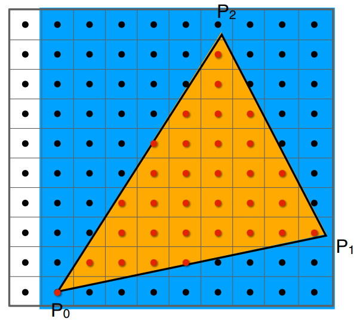判断一个点 是否落在三角形 内很简单，只需要三次叉乘，如果 同号，则认为在内部，反之在外部。
实际上去遍历屏幕上的所有像素是没必要的，像上图左边的白色区域是肯定不会碰到三角形的，三角形肯定不会填充到这些像素上，只要考虑蓝色区域即可。蓝色区域就叫三角形的轴对齐包围盒，简称 AABB(Axis-aligned bounding box)。
#反走样(Antialiasing)
由于一个像素实际上会被填充为一个正方形，大部分情况下，采样的结果并不能完美地还原一个图形，反而容易产生锯齿(Jaggies)，比如下图。
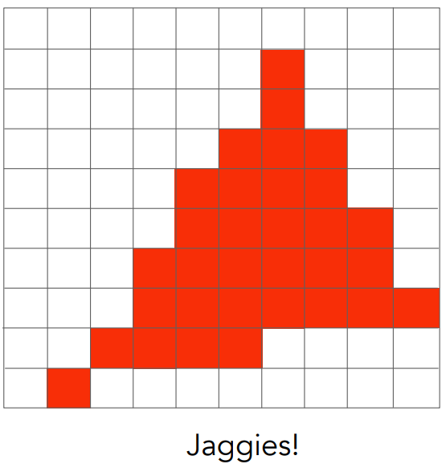锯齿是走样(Aliasing)问题的其中一种表现形式，此外还有摩尔纹（空间采样）、车轮错觉（时间采样）等。本质原因都是：信号（函数）变化太快，以至于采样速度跟不上。
反走样(Antialiasing)就是为了解决这一问题所提出的。以三角形锯齿问题为例，我们可以先将其模糊处理(Blurring)，或者说滤波(Pre-Filtering)，再对模糊结果进行采样，这样就会有一些边界被采样成粉红色，而不是说只要像素中心不落在三角形内部就被采样成白色。
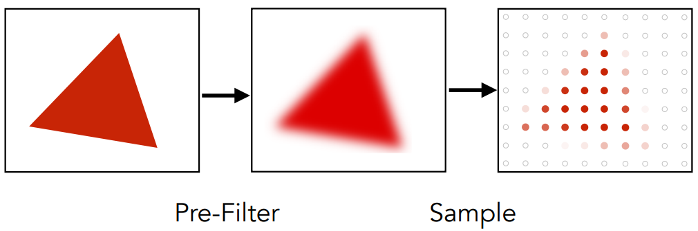❗ 注意顺序不能颠倒，这涉及到一些**频域(frequency domain)**相关的知识。可以明确的一点是：采用同样的间隔进行采样，频率越高采样越不准确，所以更高频率的函数需要更密集的采样点。比如下面，用相同的手段分别对黑色和蓝色的曲线进行采样，得到的结果是一样的，也就无法对其进行区分，从而导致走样。
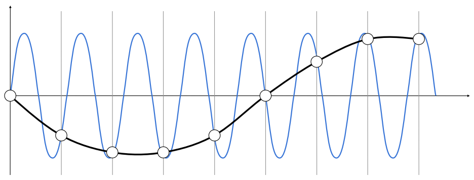而模糊处理其实就是低通滤波，将高频信息滤掉，只通过低频分量，这样再做采样操作，就不容易在频域上发生混叠。
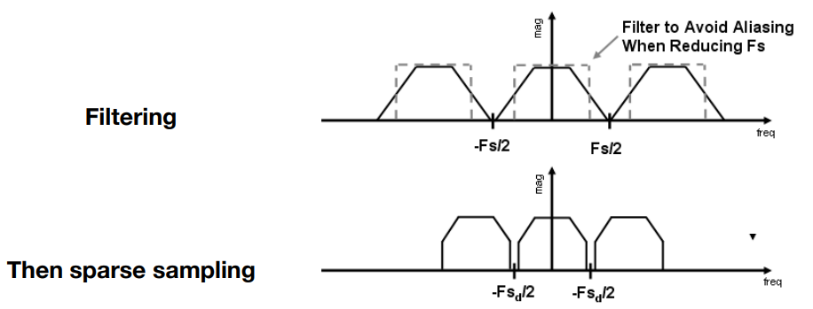最简单的操作就是，根据三角形在一个像素区域中的覆盖面积来决定采样结果。
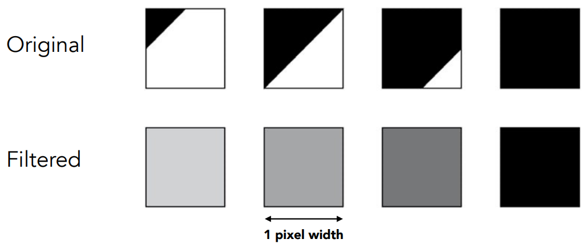那如何计算三角形覆盖的区域呢？有一种近似方法叫 MSAA(MultiSampling Anti-Aliasing)：对于任何一个像素 ，考虑其被划分成 个小的像素 ，求 被三角形覆盖的面积，实际上就是求有多少 落在三角形内部，最后对结果除以 ，这就得到了一个近似的结果。比如下图，将像素划分为 4 个小像素。
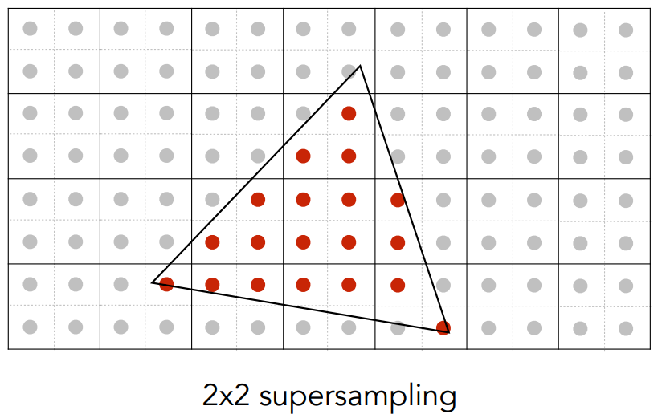 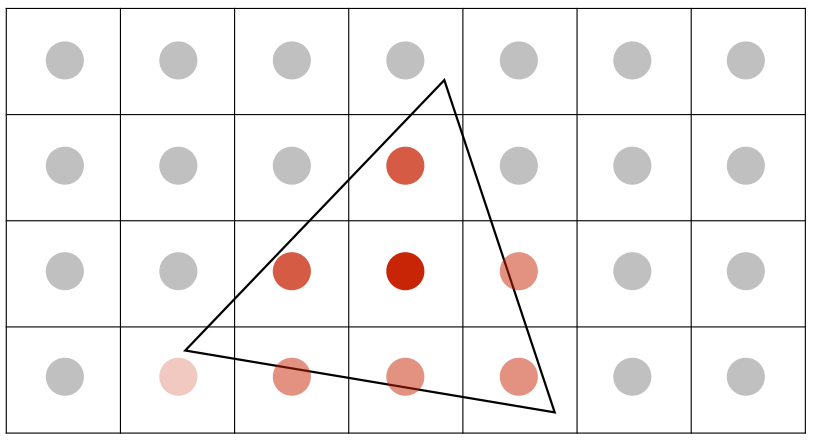
虽然效果不错，但实际上增加了 倍的开销。实际上从工业的角度，人们并不是把一个像素规则的划分为 个点，而是会用更加有效的图案去分布这些点，邻近的点还会被相邻的像素所复用，以减少开销。
还有一些重要的反走样方法，如 FXAA(Fast Approximate AA)、TAA(Temporal AA)。
这部分内容并没有「变换」那样涉及到大量公式，都是一些理论上的知识点，所以相对来说篇幅不是那么大。
#着色(Shading)
在本课程中，着色的定义为：「对不同物体应用不同材质的过程」。
#可见性(Visibility)
在屏幕映射这一部分中，我们说到将直接将多边形 平面上的点映射到屏幕空间，但并没有考虑 轴方向上会出现的**遮挡(Occlusion)**问题。
#画家算法(👎)
这是人们最开始想到的一种朴素的做法：维护一个帧缓存(Frame Buffer) 存放屏幕空间的临时像素值，不断用更近的点覆盖原有的像素值，就像油画家的做法一样，最后将得到的 Frame Buffer 写入屏幕空间对应的像素数组，得到结果图像。
这种做法需要将所有的三角形进行排序（多边形拆成若干三角形），需要 的时间复杂度。缺点在于，一旦出现循环覆盖的情况，画家算法就失效了，比如下图，无法判断哪个三角形更近。
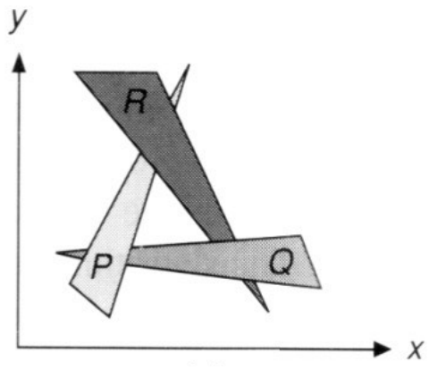#Z-Buffer(👍)
Z-Buffer 是经过实践检验的优秀算法。它的基本思路是这样的：在维护帧缓存(Frame Buffer)的同时，额外维护一个深度缓存(Depth Buffer, Z-Buffer)。我们需要遍历可视空间内的所有三角形，对其进行采样，并保留被采样点的完整坐标信息。对于一个三角形的所有采样点，如果发现某个点 对应的深度 超过 ，那么就将其舍弃，反之用该点信息更新两个 Buffer。虽然牺牲了一部分空间，却换来了速度（线性时间复杂度，无需关心顺序）与鲁棒性（解决了循环覆盖问题）。
同时，还可以根据像素深度进行额外的处理，如着色深浅。
🤳伪代码
for each triangle T
for each sample(x, y, z) in T
if (z < ZBuffer[x, y])
FrameBuffer[x, y] = RGB
ZBuffer = z#Blinn-Phong 模型——Shading is Local
Blinn-Phong Model 是一个简单的着色模型，它计算从点光源射出，在物体表面的一个点（即着色点(Shading Point)）上反射向相机的光。
它将着色完全理想化，而不考虑物理真实性，因而没有太大的现实借鉴意义。
这里认为在一个局部比较小的范围内，着色点永远是一个平面。那么关于光的反射，需要定义以下内容：
-
平面法线 ；
-
观测方向 ；
-
光照方向 ；
-
物体表面属性（如下面要提到的漫反射系数）；
Shading is Local，这句话的意思是，着色只会考虑这个着色点，以及光照和观测方向，不考虑其他物体的存在，所以没有阴影。
#漫反射(Diffuse Reflection)
对于漫反射(Diffuse Reflection)而言，光在着色点均匀地向四面八方反射，故此时观测结果与观测方向无关。
另外我们发现，当着色点平面法线方向和光线的夹角变化时，得到的观测结果明暗程度也会发生变化。根据光的波粒二象性，光是具有能量的，所以当 变化时，着色点在单位面积收到的能量值（光强度）也会有所变化。具体而言，光强度与 呈正相关。我们判断物体的明暗程度，本质上就是判断该物体表面能接收到多少能量。
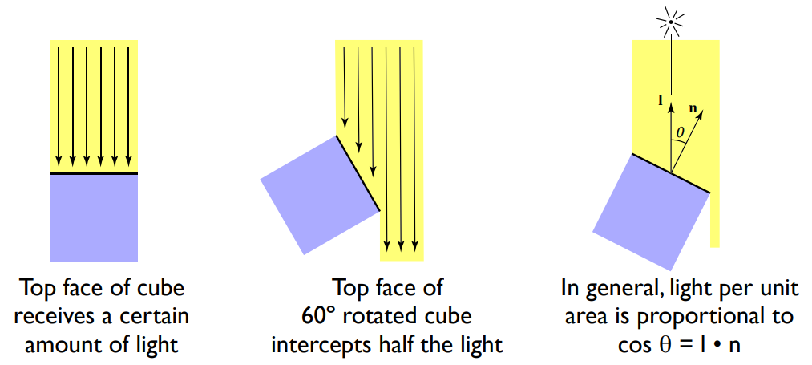除了角度以外，点光源与着色点的距离也是决定光强度的一个重要因素。根据能量守恒定律，假设光的传播不会发生能量损耗，则以点光源为中心，半径 1 个单位长度的球体表面和半径 r 个单位长度的球体表面，两者所具有的能量应该是相等的。假设前者的光强度为 ，那么后者的光强度应该为
基于以上讨论，Blinn-Phong 模型给出如下的漫反射公式：
其中
-
为漫反射光强；
-
为漫反射系数，表示这个点对光的吸收率；
对于一个点，它之所以会有颜色，是因为这个点会吸收一部分的颜色（能量），将那部分不吸收的能量进行反射。那不同的物体表面材质不同，因而有不同的吸收率，就会产生不同的反射光。当这个系数为 1 时，表示这个点完全不吸收能量；为 0 就表示所有能量都被吸收了。如果把这个系数表示为一个三通道的 RGB 颜色向量，那就可以在着色点上定义一个颜色了。
控制变量法得到的结果大概是下面这样
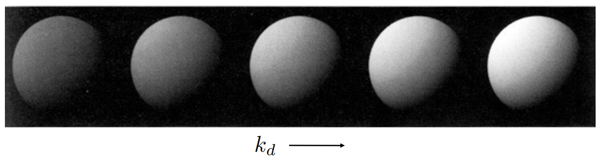
#高光(Specular)
当观测方向和光反射方向一致（或者说接近）时，能观测到高光。
这里不考虑漫反射，只谈镜面反射。
那么如何定义「接近」呢？假设反射光方向为 ，则 越小，表示越接近。但是 比较难求，Blinn-Phong 模型改为求解半程向量 与法线 之间的夹角 。所谓半程向量，其实就是 与 的角平分线，有 。
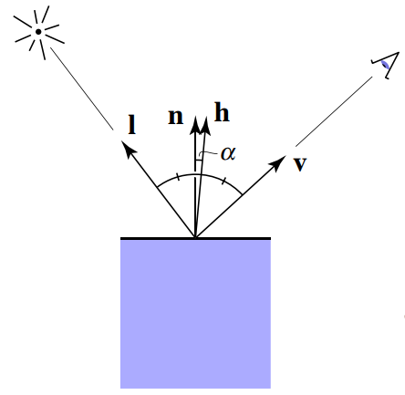基于以上讨论，Blinn-Phong 模型给出如下的高光项公式：
其中
-
为高光项光强；
-
为高光项系数，决定观测到的高光明暗程度；
🙋♂️ 之所以有一个指数 ，是因为需要对「接近程度」设置一个阈值，当 时，即便 与 夹角达到了 45°，此时我们认为已经是相当偏离了，但余弦值为 ，还是能观测到比较明显的高光，这完全不符合我们的预期吧！
所以需要加入指数 进行控制，使得夹角增大时， 能够快速衰减，比如下图
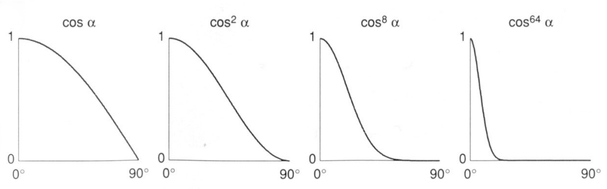控制变量法得到的结果大概是下面这样（加入漫反射项）：
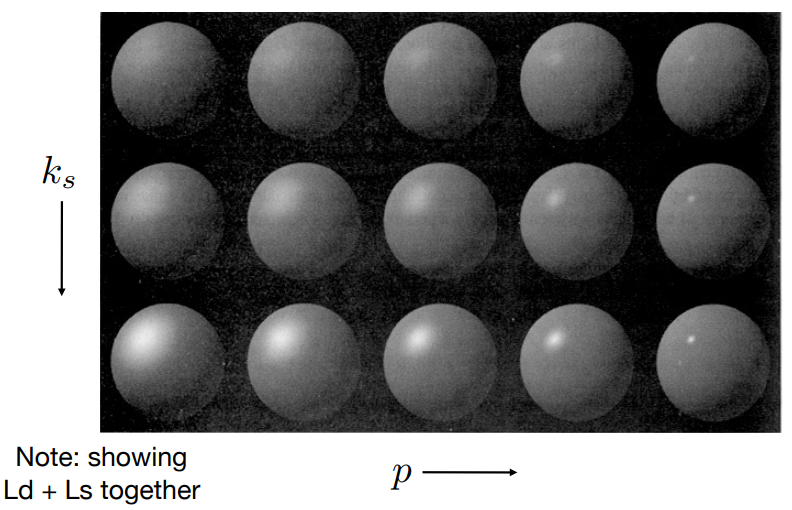
#环境光照(Ambient)
虽然有些点因为遮挡等因素，不会接收点光源的直射光，但是存在来自四面八方的、反射自其它物体表面的光，这就是环境光(Ambient)。
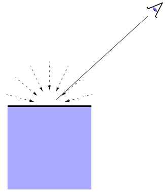Blinn-Phong 模型给出的环境光项公式很简单：
其中
-
为环境光强；
-
为环境光系数；
-
为光强，且假设任何一个点接收到来自环境的光强永远都是相同的；
不难发现，该模型的环境光强和 无关，是一个常数，保证了没有一个地方完全是黑的。事实上不是这么一回事，正如我之前说的，Blinn-Phong 只是一个简单的模型，如果要对环境光做精确求值，需要运用到全局光照的知识。
#总结
Blinn-Phong 模型下，我们最终能观测到的光强是以上三大项之和，即
下面是一个简单的示例
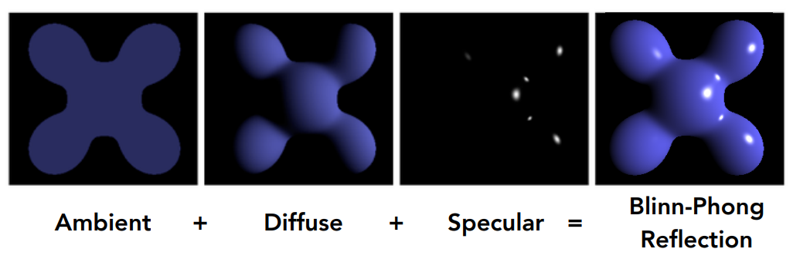❗ 再次强调，Blinn-Phong 只是一个简单的模型，不具备物理真实性，没有太大的现实借鉴意义。
#着色频率(Shading Frequency)
选择着色频率，本质上是「如何选择着色点」的问题。下面的讨论中，我们认为物体表面由若干三角形的平面组成。
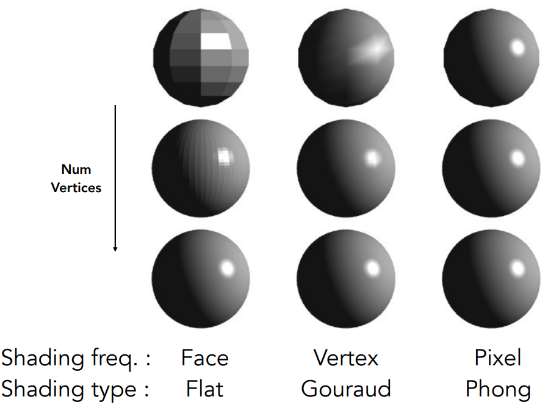#Flat Shading
将着色应用到整个三角形上。对于一个三角形，我们只需对任意两条边作叉乘，即可求得法线，最后对三角形内部所有点作同样的着色处理。缺点是不够平滑。
#Gouraud Shading
将着色应用到顶点上。对于物体表面任意一个顶点，其相邻的所有三角形为 ，这些三角形面积为 ，法线为 ，那么此顶点为着色点对应的法线为
本质上是对所有法线作一个加权平均，权值为其面积，故面积越大的三角形，影响/贡献越大。
对于一个三角形，其三个顶点的着色已知，那么三角形内部应用插值即可。缺点是一旦某个三角形过大，着色效果就会不明显。
#Phong Shading
将着色应用到像素上。首先对于三角形的每个顶点求出各自的法线，在三角形内部每一个像素上都插值出一个法线方向，对每一个像素进行一次着色，就会得到一个相对比较好的效果。
🤔 注意和 Blinn-Phong 区分。虽然都是同一个人发明的。
#总结
根据一开始放的图，在顶点数较少，即模型比较简单时，Phong 的效果无疑是最好的，但也要一定的开销。而当顶点数增大，模型逐渐复杂时，即便用相对简单的 Flat Shading 也能得到一个比较好的效果，因为此时一个平面的大小可能已经接近像素大小了。
#实时渲染管线(Real-time Rendering PipeLine)
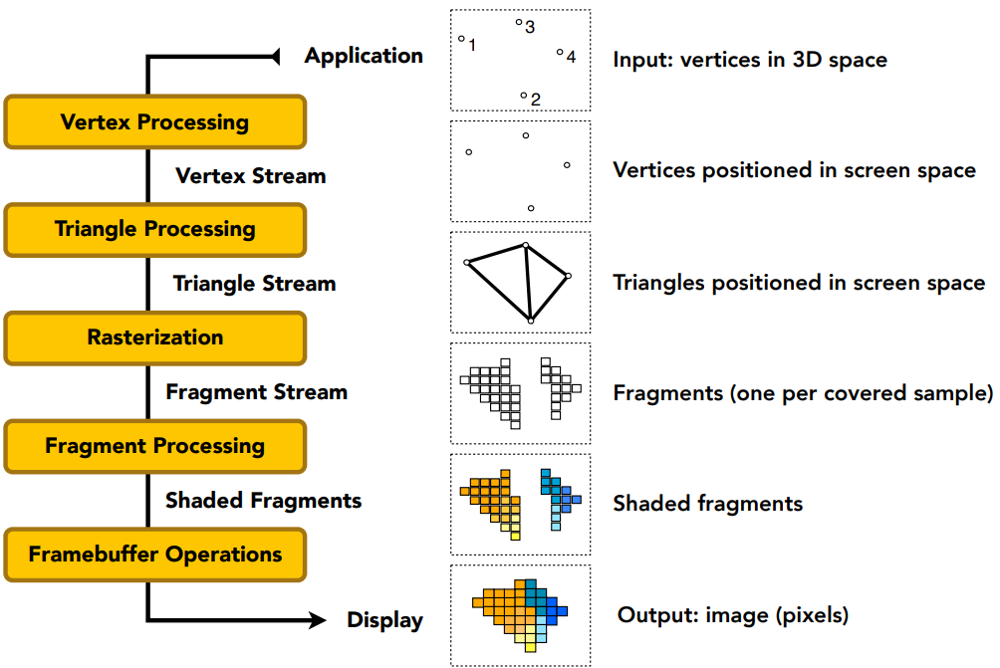-
输入空间中的若干点；
-
将这些点投影到屏幕上，定义连接关系，生成相应三角形；
-
光栅化，形成不同的离散的片元(fragment)；
-
考虑可见性与着色频率，将不同的片元进行着色；
-
输出到显示器；
以上就是从三维场景到最后渲染出二维图片的基本操作，这些都是已经在 GPU 里写好了的。
🙋♂️ 提问：为什么在管线中是先把三维空间中的点投影到屏幕上去，然后再把它连成三角形呢？
定义空间物体时，首先定义顶点，再进行若干次定义由哪三个顶点构成小平面，这两步是将直接定义所有的三角形进行拆分，本质上是一样的，且三维空间投影到二维屏幕时，点与点之间的连接关系是不变的，所以我们只要对顶点进行操作就行。
#纹理映射(Texture Mapping)
纹理映射解决了这样一个问题：给定三角形，我们希望观察到的结果为，三角形内部填充了某一张图片。
前面提到，对于一个表面，我们能够观察到不同颜色以及不同明暗程度，实际上是这个物体表面的属性发挥了作用——吸收一部分光，反射剩下的部分。我们能够看到物体表面仿佛填充了一张图片，本质上是这个物体表面的不同点具有不同的属性，这才是决定了不同观测结果的重要因素。
所以纹理映射的根本作用，就是定义物体表面属性。
那么如何定义呢？对于任意一个三维物体，其表面都可以通过某种方式转变成大小为 的二维图像，那么只要我们得到任意一张图，就可以通过逆操作将其「贴」到三维物体上，这就是赋予纹理的过程。只要将三维物体表面的所有三角形平面，都在这个二维图像找到一一对应关系，那么我们就可以把「定义三维物体表面属性」简化为「定义二维图像表面属性」了。
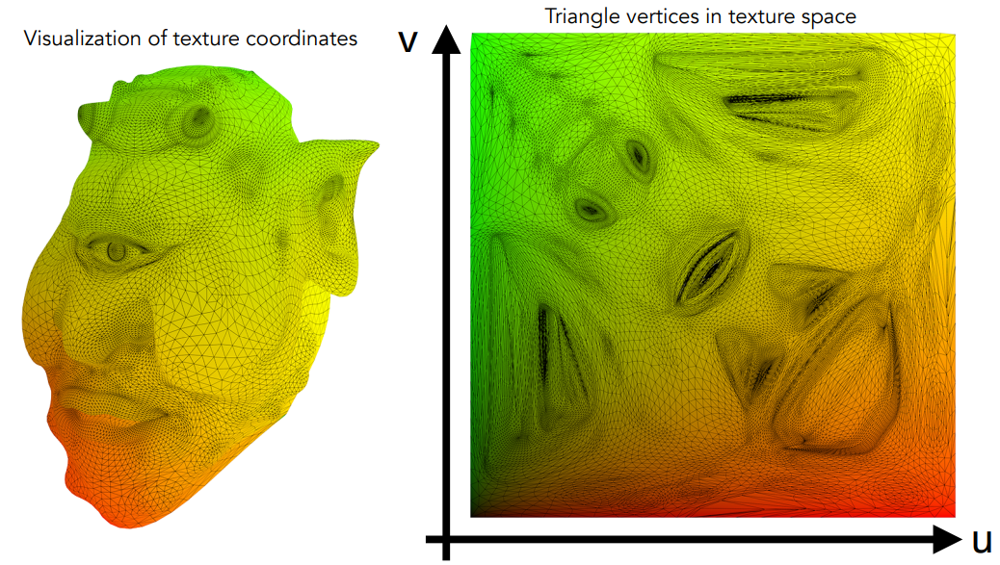假设这种映射关系已经找到了。不难发现，任意一个三角形的顶点，在二维纹理图像 上都有对应的坐标，所以顶点处的纹理很好计算。那如何计算三角形内部任何一个点的纹理坐标呢？这就又涉及到插值了，即让纹理在三角形内部作平滑过渡。
同时我们希望对于多个相邻物体赋予同一纹理时（比如草坪，以一个平方为单位赋予纹理），我们希望两块纹理之间能够无缝衔接（这种纹理称为 tilable texture）。这就需要一个好的纹理设计，通常使用 wang tiled 算法。
#插值(Interpolation)
之前我们提到过很多次「插值」的概念，在这里对其进行比较详细的阐述。插值的意义在于，如果已知三角形的三个顶点的值，那么通过插值的方法可以得到三角形内任何一点的值，并且任意两点之间的值是平滑过渡的。下面主要了解一种名为「重心坐标」的插值方法。
#重心坐标(Barycentric Coordinates)
根据高中知识，对于二维平面上的三角形而言，其重心定义为三条中线的交点。重心有一些重要的性质，比如与三角形顶点的连线将三角形面积三等分，平面直角坐标系中重心的坐标等于顶点坐标的算术平均等。第二条性质用数学的方法可以表示为
其中 为 的重心。
再次根据高中知识，线段 上的一点 的坐标可以表示为 。
那么对于 而言，我们完全可以认为其内部一点是 上某一点和 所成线段上的点，是否也可以利用上面这个性质呢？答案是：可以！
事实上三角形内部任何一点 的坐标都可以表示成 的形式，其中 。只不过重心是 时的特殊情况。
简单的推导
取 内部任意一点 ，连接 并延长交 于点 。易得 ，那么有
此时令 即得结果，并且不难发现
我们称 为重心坐标（注意区别于重心的坐标）。
现在问题来了，对于三角形内一个点，怎么求对应的重心坐标呢？答案如下图所示，证明就不证了。
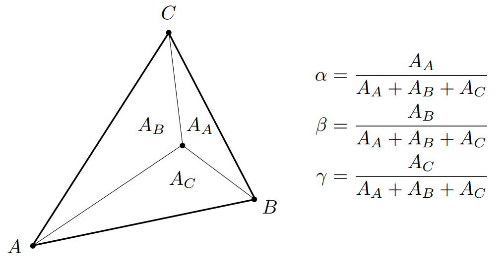现在我们可以利用这三个系数进行插值了。已知三个顶点的「值」 ，利用重心坐标，内部任意一点的「值」为
这里的「值」既可以是 Phong Shading 的法线，也可以是纹理值。
要注意的是，三维空间的点 投影到二维屏幕上成为 后，。所以想要对三维空间的属性进行插值，就必须先在三维空间内做，再对应到二维结果上去。
#纹理映射中的应用
现在我们可以计算三角形内部任一点的纹理坐标 了，具体做法是：在三维空间中，先求出重心坐标 ，再利用三个顶点的纹理坐标进行插值计算 。得到结果后，就可以直接去二维纹理图上找到对应的纹理值，应用即可。
#双线性插值(Bilinear Interpolation)
对于一个给定的纹理，其上的纹理元素(Texel, Texture Element)数量是固定的。在纹理比较小的情况下，比如我们要将一张 512*512 的纹理应用到整个 4k 屏幕上，就必然导致屏幕的多个像素，对同一个 Texel 进行采样。有的像素点可能对应的纹理坐标没有落到纹理中心，比如下面这样
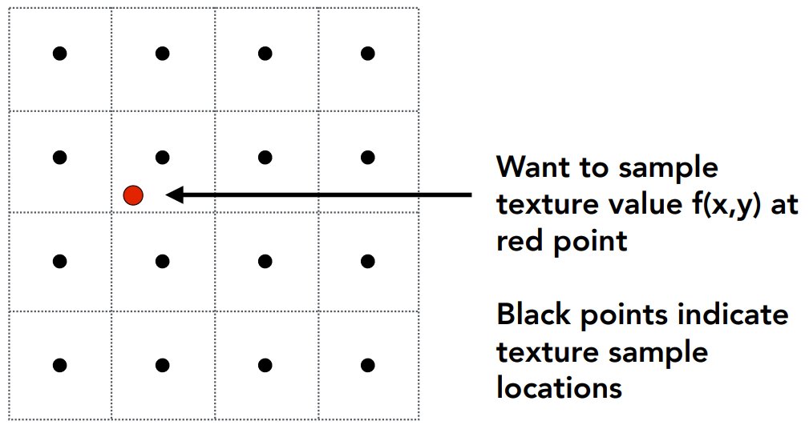一种简单的方法是就近法(Nearest)，就是找最近的那个 Texel，那么会使得多个像素赋予同一个纹理值，最后得到的结果就会呈现颗粒状，两个像素之间有明显的界限，如下面最左边那张图。
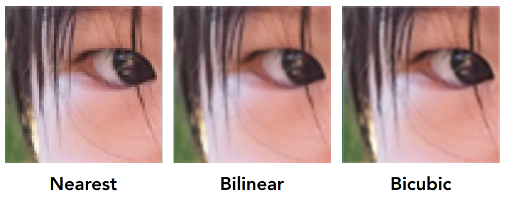我们发现中间的 Bilinear 方法效果更好，那么它为什么会这么好呢？是因为 Bilinear 不是找最近的一个，而是根据最近的四个 Texel 的纹理值作两次线性插值，就会得到一个比较好的效果，同时开销也不会非常大。

而最右侧的 Bicubic 是找最近的十六个点，效果当然会更好，但同样开销也更大了。
#mipmap 与三线性插值(Trilinear Interpolation)
上面讨论了纹理过小的情况，还算比较简单。那么纹理如果过大呢？比如在一个屏幕内有一个视角很大、场景层次很丰富的世界场景，远山所占的屏幕内容很小，但是纹理贴图却很大，此时会转变为同一个像素点对多个 Texel 进行采样。根据之前的讨论，这时数据频率远大于采样频率，就会导致图像失真，出现摩尔纹等现象。
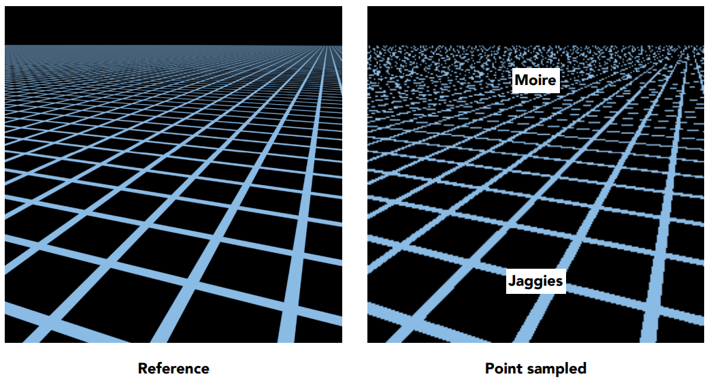我们可以用 MSAA 的方法，在一个像素点内用更多的采样点，取平均值就好了，效果当然会不错，但是开销也会非常大。有没有一种更好的方法，即我们能不能在采样前预先计算好平均值，这样就不需要在采样的时候作重复计算呢？Mipmap(Multum in parvo map) 来了。
Mipmap 的原理很简单，对于一个纹理图，不断将其分辨率缩放一半，每缩放一次，将结果作为更高的 level。 层对应大小为 的纹理区域。之后只需要求出采样的纹理面积/边长，在相应 level 的纹理图中根据 取值就行。
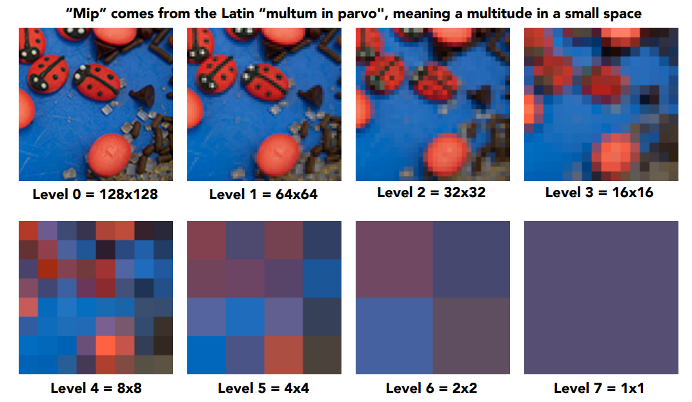对于屏幕上的一个像素点 ，我们可以找其相邻的四个像素点，将这五个点分别在纹理空间中找到对应的纹理坐标，然后求中心点 到另外四个点距离的最大值 ，就可以近似认为该像素点所采样的纹理区域是一个边长为 的正方形。说明该像素点对应的纹理值要去 层取。
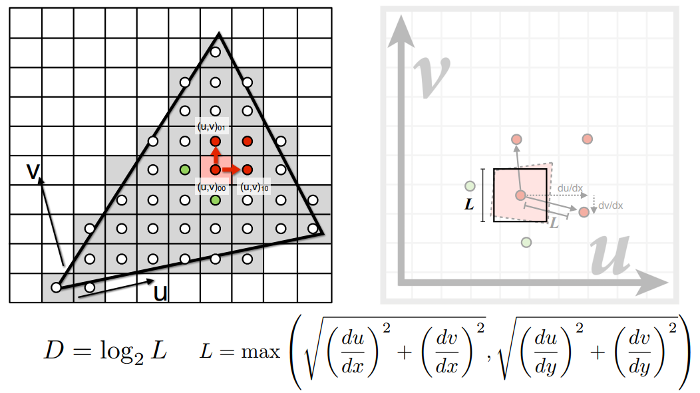这里的 如果是一个浮点数，就不能直接使用了，我们总不能去 1.7 层找吧！如果进行四舍五入那就又陷入就近法的误区了。参考之前的做法，我们可以找到 层和 层的 bilinear 结果，然后再次进行线性插值。实际上就是 trilinear 了。
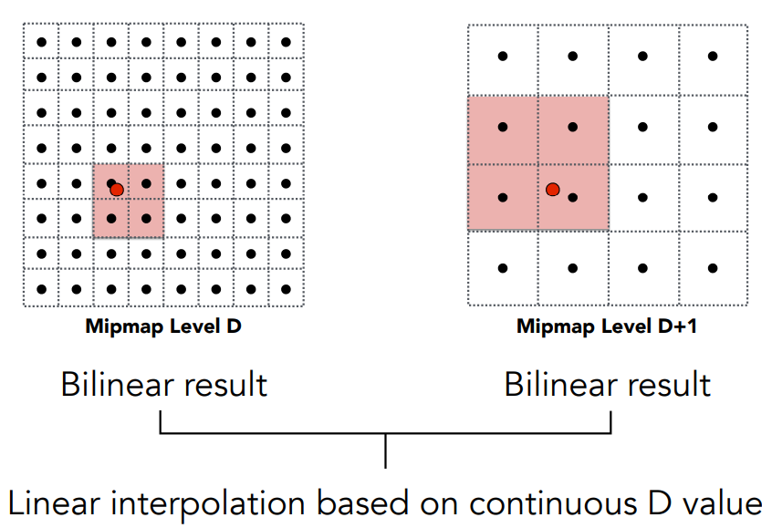三线性 + mipmap 虽然能处理一些小像素采样大纹理的问题，但仅能对正方形进行近似，如果一个像素点采样的纹理区域是不规则图形，比如比较斜的平行四边形，此时用正方形对其进行近似就会出现 OverBlur 的问题。
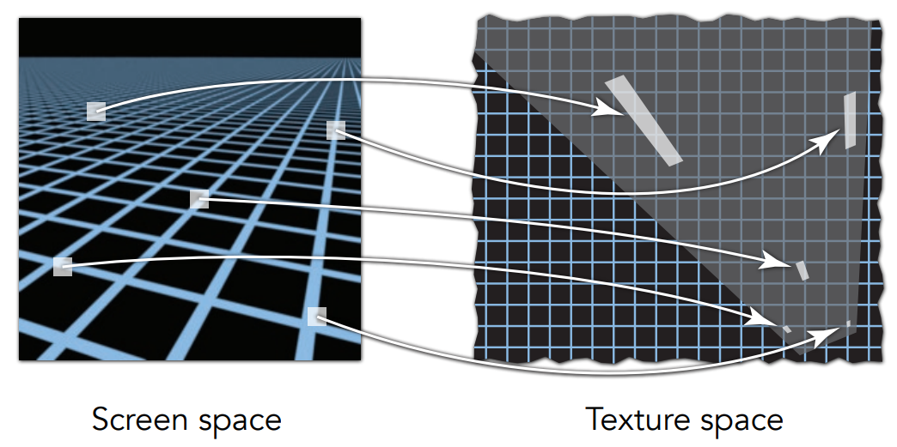有一些替代方案，比如**各向异性过滤(Anisotropic Filtering)**可以用矩形进行近似，但并没有解决上面提到的问题。
EWA filtering 可以将不规则形状拆分为若干圆形，每次查询其中一个圆，分多次查询来近似。虽然能够比较好的进行近似，但「多次查询」已经暴露了其开销过大的缺陷。
#纹理的其他应用
对于现代 GPU 而言，所谓纹理，其实就是一块内存(memory)，并且可以对其进行范围查询/过滤(range query/filtering)，所以纹理其实是一个比较广义的概念，并不局限于「图片」，可以表示非常多的东西。
#环境贴图(Environment Mapping)
我们可以用纹理来描述环境光，再去渲染物体，这样就代替了点光源。此时我们可以假设环境光都是来自无穷远处，光强和距离无关，只记录方向信息，也就是说只要方向相同，环境光强就是一致的。比如下图，左图描述了在房间里从四面八方看到的光，用左图去渲染一个茶壶（右图），我们就能观察到茶壶被环境光所照亮，并反射来自四面八方的光。
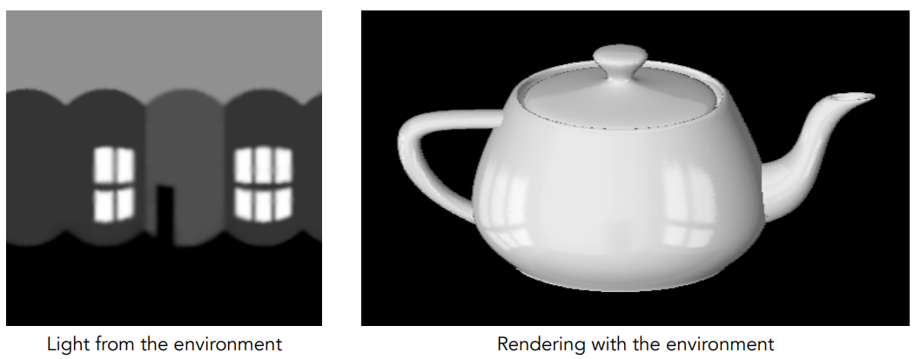这是一个经典模型，名为犹他茶壶(Ultra teapot)
那么如何描述呢？
第一种做法是存储在球面上，但因为不是一个均匀的描述，会在靠近极点的地方出现扭曲。
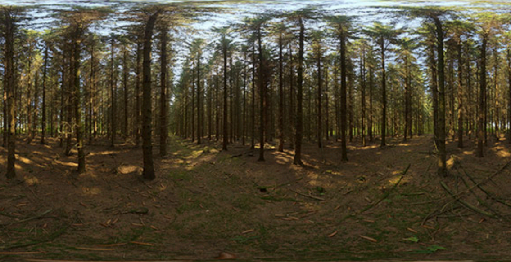第二种做法是，假设上面的球有一个立方体状的包围盒，那原来记录在球面上的环境光信息，会沿着与球心的延长线打在盒面上，而不会有差异。也就是可以将环境光信息存储在立方体表面上，这样展开就会得到下图：
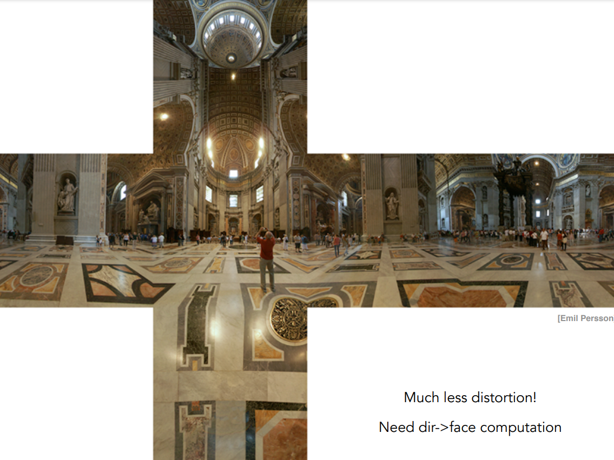#凹凸贴图(Bump Mapping)
纹理甚至可以定义物体表面某个点的「相对高度」，也就是在原来物体基础上定义凸起和凹陷的程度。这样就可以在不修改几何模型的前提下影响物体表面的着色。如下图，定义了相对高度后，求得的法线就会随之发生变化，那 Shading 的结果就会发生变化，就会看到不同的明暗对比。
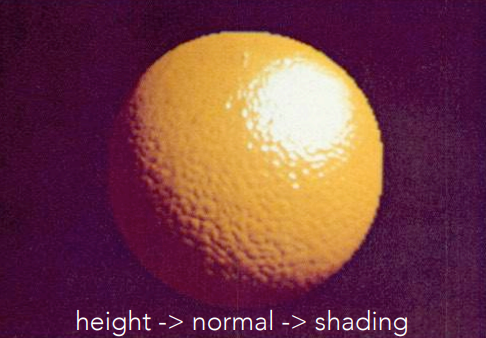如果想表示球上凹凸不平的复杂几何，那就要用更多的三角形了。
法线的求法也很简单，只需要在纹理空间中求出该点在 两个方向上的梯度，那就得到了切线，通过切线就能简单地得到法线了。
#位移贴图(Displacement mapping)
凹凸贴图本质上没有改变物体几何，而是用了视错觉原理，欺骗人的眼球，给人一种凹凸不平的错觉。
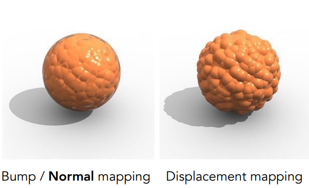而位移贴图实际上会修改物体几何，即改变了三角形顶点的位置。但如果一个三角形比较大，就无法改变三角形内部还有一些需要改变的位置。也就是说三角形要足够细，细到三角形顶点之间的间隔要比纹理定义的频率还要高，使得模型能够跟得上所定义的纹理的变化速度。
有一种解决方案是，开始先用比较粗糙（三角形少）的模型，在应用位移贴图的过程中检测一下是否应该把三角形变得更细，如果需要，就将三角形拆开成很多小三角形，再继续做位移贴图。
#三维纹理
事实上纹理没必要限制在二维，也可以是三维的。像下图，如果将这个球砍一半，我们希望可以看到它内部的情况，也就是说需要定义空间中任意一个点的纹理值。而实际上没有真的生成纹理的图，而是定义了一个定义在三维空间中的噪声的函数，所以在空间中任何一个点，它都有一个解析式可以算出来噪声的值。像这里是柏林噪声(Perlin noise)
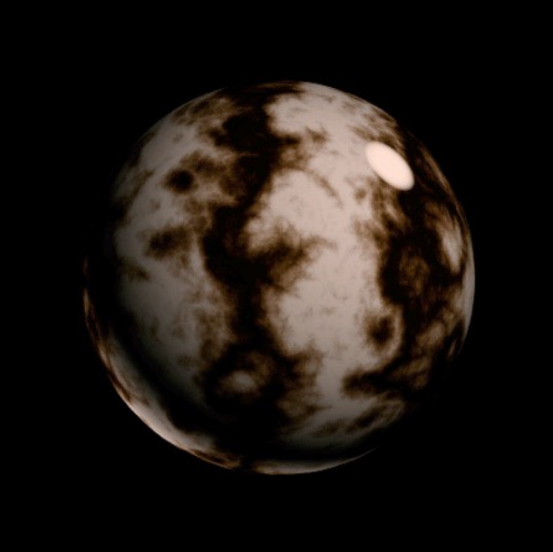#几何(Geometry)
#隐式表示(Implicit)
隐式表示方法不会指明具体的点在哪，而是给出这些点满足的关系。
#代数曲面(Algebraic Surfaces)
根据单位球面满足关系 ，不妨进行推广，任意物体表面都可以由这样一个数学公式进行表达：
已知任意一个 ，我们可以计算 ，进而判断 在物体内部（<0）、表面上（=0）还是在物体外部（>0）。
#构造实体几何(CSG, Constructive Solid Geometry)
通过对基本几何的基本布尔运算（并集、交集、差集），来定义新的几何。
#符号距离函数(Signed Distance Functions)
对于任何一个几何，都不直接描述它的表面，而是描述任何一个点到这个表面的最近距离，这就是符号距离函数（结果为正则认为在物体表面的外面，负的则在物体内部）。
计算出两个物体的符号距离函数 后，就可以将两者做一个 blending，得到一个新的符号距离函数 ，然后再恢复成原来的物体（所有满足 的点构成的集合就是物体的表面），就可以得到如下的变换。
#水平集(Level Set Methods)
这个方法的思路和距离函数其实完全一样，仅仅是函数的表述是写在格子上的，函数在不同的格子上有不同的值，只需要找出格子中值为 0 的点（可以通过双线性插值计算），就可以将函数试图描述的物体表面提取出来。
这和地理上的等高线的概念是一致的。
#分形(Fractals)
分形是自相似的意思，也就是说自己的一个部分和它的整体长得非常像，和计算机科学中说的递归是一个道理。下图是一种叫 Romanesco 的西兰花。
这种类型的几何对于渲染和描述来说都是巨大的挑战，渲染时会引起强烈的走样
#总结
隐式表示表述起来相对容易，同时支持点与物体表面位置关系的查询，且有利于求解光线与表面的交集。
缺点在于，很难描述复杂的几何结构。
#显示表示(Explicit)
显示表示则是直接给出点的位置。
#参数映射(Parameter Mapping)
比如定义了一个坐标系 ，对于给定的任意点 ，都会映射到空间中的点 中，这样只需要遍历一遍 ，就可以得到所有的 。
#点云(Point Cloud)
我们不考虑物体是一个表面，而是由海量点组成。只要点足够密集，那么点与点之间的缝隙就可以忽略不计，理论上可以表示任何类型的几何体。
而如果点云密度很低，就很难绘制成物理实体，所以除了最原始扫描出来的数据，人们很少用点云。
#多边形面(Polygon Mesh)
这是用的最广泛的，也是之前一直在聊的，就是将物体表面视为由若干三角形组成。这就会涉及到一个问题，就是三角形之间的连接关系，这是点云不会遇到的。
有一种特殊文件格式，The Wavefront Object File(.obj) Format，对于该格式的文件，一个文件存储一个物体或场景，把空间中的一堆顶点、法线和纹理坐标分开来表示，然后在一块把他们组织起来形成模型。如下图，描述的是一个立方体。
-
v：描述顶点信息； -
vt：描述纹理坐标； -
vn：描述每个面的法线方向； -
f：描述哪三个点构成三角形，格式为三角形顶点/纹理坐标/法线坐标；
#贝塞尔曲线(Bézier Curve)
贝塞尔曲线由一系列控制点 定义。具体而言，我们需要将控制点顺序连接（这样会有 条边），在每条边上我们找到 分点，得到一组新的点 。重复上述过程，直至生成唯一一个点 。当 时，这个点就表示了贝塞尔曲线的运动轨迹。
我们可以利用 这一性质作金字塔式计算，不难得到这样一个结论
其中 ，即二项分布多项式（伯恩斯坦多项式）。
贝塞尔曲线具备以下性质：
-
过起点 （t=0）和终点 （t=1）；
-
在 时，曲线在起点和终点的切线满足：；
-
仿射相似性：对原始控制点作仿射变换后得到新控制点，再构造贝塞尔曲线 ，和直接对原始贝塞尔曲线 作仿射变换所得到的结果是一样的。投影变换不行；
-
凸包性质：贝塞尔曲线一定在所有控制点形成的凸包（能够包围一系列给定的几何形体的最小的凸多边形）内。如果所有控制点共线，那么对应的贝塞尔曲线是起点与终点形成的线段；
🤷♂️ 当控制点数量过多时，得到的贝塞尔曲线并不一定是我们想要的，甚至很难控制。
此时可以若干个控制点为一组分别绘制贝塞尔曲线，再首尾相连即可。一般取 4 个为一组，也就是 Piecewise cubic Bézier。这形成一种最简单的连续，是几何上的连续，一般称为 连续。
但为了使结果平滑过渡，我们需要利用性质 2，令分段点的左右切线相等。此时有三点共线，且分段点（中间的点）为线段中点，如下图所示。此时就称为 连续。
连续则要保证二阶导连续，更高阶的连续性同理。
#贝塞尔曲面(Bézier Surfaces)
贝塞尔曲面其实就是通过贝塞尔曲线得到的。对于一个用 4*4 个点控制的贝塞尔曲面而言，可以将其 4 个控制点为一组分为 4 组。
每一组控制点得到一条横向的贝塞尔曲线 ，当 相同时，四条曲线上的点 四点共面，我们认为这四个点可以作为新的控制点，并绘制出一条纵向的贝塞尔曲线。
当 时，横向贝塞尔曲线的这四个点会逐渐扫过空间，那么这四个点控制的贝塞尔曲线在扫的过程中也就形成了最终我们想要的贝塞尔曲面。

要找到贝塞尔曲面上任何一个点，根据上面的过程，需要两个不同的参数，在水平方向上找一个参数 ，找到 4 个点后，这 4 个点要连成一条曲线，还需要一个参数 。所以需要用二维参数来控制，那不如管它叫 好了🤣。
#网格细分(Mesh Subdivision)
我们可以通过增加三角形的数量，使要表示的曲面更加光滑，看上去就像增大了图像的分辨率，可以看到更多细节的东西。
#loop 细分
loop 是人名，不是「循环」的意思。
取三角形三条边的中点，依次相连，可以将三角形一分为四。接下来就可以通过调整顶点位置来修改三角形的位置。这里特殊的一点是，新顶点和旧顶点需要采用不同的规则。
对于新的顶点 ，只要其所在边 不是物体边界，那么必定被两个三角形 共享。此时需要将 更新至 ，从而使得表面更加平滑。
对于旧的顶点 ，取其度 以及一个相关的数 ，对其自身与邻接点（旧）做一个加权平均，这样既能在度较低时尽可能保留本身的位置信息，也允许在度较大时完全由其它点来决定。
#Catmull-Clark Subdivision
loop 细分仅在三角形网格中适用，而如果存在一些网格面是四边形（对应一般的情况），就需要用到 Catmull-Clark 细分了。
图灵奖得主提的算法。
首先定义度不为 4 的点为奇异点，四边形平面为 quad face，其它为 non-quad face。
第一步进行细分，具体操作为：取 non-quad face 上的重心，与其每条边的中点进行连接。在此操作后，就不存在 non-quad face 点了，只是会引入等量的奇异点。
第二步进行调整，依然是有不同规则，如下图。
#网格简化(Mesh Simplification)
游戏为提高性能，不希望顶点太多，顶点多了，顶点的变换、着色等要花更多的时间；并且如果某个物体距离很远，就不需要用很多三角形去把一些细节的东西建模出来。
总而言之，当我们不需要这么复杂的网格的时候，就可以减少网格数量，去掉一些边和三角形。
但仍然要维持它们之间的相互关系，这就需要一定的方法。
#边坍缩(Edge Collapsing)
找一条边，将这条边两端的点缩到一起，这条边就不存在了。
怎么找边也是有讲究的。我们希望找到的这条边尽可能「不重要」，也就是将其坍缩后对物体的影响尽可能小。那么如何衡量所谓的「影响」呢，就要使用到**二次度量误差(Quadric Error Metrics)**了。
令某条边坍缩后形成的新点 ，那么 到原本受影响面的距离平方和就是要求的二次度量误差。
我们不妨假设每条边坍缩后，将新点进行移动，总能移动到一个最优的位置，使得二次度量误差最小，那么可以将最小的二次度量误差值作为该边的坍缩分数（该值越大，就表示这条边坍缩后对物体的影响越大）。
在统计所有边的坍缩分数后，我们可以不断取坍缩分数最低的边进行坍缩，之后更新所有相关的边（或者说发生变化的边），重复上述步骤直至不再需要进行简化。
这种方式是一个典型的贪心算法，通过不断对局部做最优解的方式试图找到一个全局的最优解。虽然不能保证有全局最优性质，但是结果不错。可以利用优先队列/堆来实现，能保证既快速取到最小值，又能动态的以最小的代价去更新其他的受影响的元素。
#网格正则化(Mesh Regularization)
如果三角形有大有小有细长，会对渲染造成不便，通常对于这种情况，会对模型做正则化，即让这些面变得更像正三角形。

#光线追踪(Ray Tracing)
光栅化本质上是一种快速，近似的渲染方法，质量相对较低，仅能处理局部着色点，并不能很好地处理全局效果，如软阴影(Soft Shadow)、光泽反射(Glosyy Reflection)、间接光照(Indirect Illumination)等。通常用于实时的应用，如每秒生成超过 30 帧的图。
而光线追踪渲染准确，质量高，完全符合物理规律，能给大家带来最真实的渲染结果，缺点是非常慢。更多被用于做离线的应用，如电影生成。
#Shadow Mapping
在「着色」部分，我们谈到「Shading is Local」，也就是没有考虑阴影，接下去就把这缺失但重要的部分给补上。
我们先考虑点光源下如何生成阴影。如果将一个点和点光源相连，与其它物体产生交点，那说明该点被遮挡，在我们的视角里这个点会被打上阴影；如果这个点我们压根看不到，也就不用谈阴影的事了。
所以这里有一个很简单的思路：对于原始相机处所有可见的点，我们可以在点光源 处对其进行观测，如果其在 处不可见，说明光线没法到达这个点，那也就是在阴影里；反之正常着色。
判断一个点是否「能被光源相机看到」，可以直接在位置 做一遍光栅化，就生成了所有光源会看到的点的深度信息。接着在原始位置再做一次光栅化，匹配可视点在 处的深度，如果不一致，说明在阴影中，如下图红线；反之，可以被正常着色，如下图蓝线。
这种做法在判断「深度一致」方面存在浮点精度问题，毕竟判断两个浮点数相等是做不到的，虽然人们也引入了 的方式，但不能从根本上解决问题。
同时，在点光源处做光栅化也会涉及到分辨率的问题。如果分辨率很低，但渲染整个场景的分辨率又很高，那就容易产生走样（场景多个点对应到同一个像素）；但分辨率太大的话开销就会大。
我们在对某个点进行判断时，仅仅是「非此即彼」的形式，要么在阴影中，要么不在阴影中，所以 Shadow Mapping 只能做硬阴影(Hard Mapping)：阴影的边缘非常锐利。比如下面这样。

与此相对的还有一个软阴影(Soft Mapping)，它俩本质区别在于光源大小不同。如果光源非常大，那就会在物体背后形成「半影区」，此时就产生了软阴影：可以观察到阴影在逐渐过渡，越靠近物体根部越「硬」（本影区），反之越「虚」（半影区）。比如下面这样。
#基础光追算法
光线具有以下基本物理性质：
-
直线传播；
-
两条光线不会发生碰撞；
-
光路可逆；
早期有人认为人眼观察到物体这一现象，是因为眼睛会发出感知光线打到世界中，当光线被物体挡住时就看到了东西。
上面这一说法，在现在看来显然是错误的认知，但可以为光追原理带来一点感性上的参考。实际上，光线追踪是从相机/人眼出发，往世界中投射光线，然后不断弹射直到光源上的过程。
#光线投射(Ray Casting)与针孔相机模型(Pinhole Camera Model)
假设我们在往虚拟的世界中看，面前放了一个成像平面，成像平面上有很多像素的小格子。对于每个像素，可以从摄像机连一条线穿过这个像素，相当于打出去一根光线，这个光线会打到场景中的某个位置。
事实上，这根光线会和很多物体相交，而物体之间会有遮挡关系，人眼看到的肯定是最近的，所以永远考虑这根光线和场景中的物体最近的交点。
判断这个点是否在阴影里（与光源的连线(Shadow Rays)是否会被阻挡），如果它不在阴影里，根据光路可逆性质，这就形成了一条有效的光路。最后通过计算这条光路的能量，进行相应的着色操作。
#递归算法(Whitted-Style)
通过上面的方法可以得到和光栅化近似的结果，可这种方法狭隘地认为光线只反射一次——光线其实可以反射/折射很多次。对于更复杂的情况，可以用下面的算法实现。
Whitted-Style 的核心思想在于：光线可以在空间中无限传播，只要你正确的算出来反射方向和折射方向。
如果一个点满足折射条件，那么光线投射到这点上就会发生折射，比如下面的球体（可以认为是一个玻璃球）。
由于光线发生多次弹射，上图中的 4 个弹射点都需要计算一次着色值，并且该光线对应的像素值为空间中所有弹射点的着色值之和（需要考虑能量损失）。
#光线和物体表面交点(Ray-Surface Intersection)求解
奇-偶规则(Odd-Even Rule)：从任意位置 作一条射线，若与该射线相交的多边形边的数目为奇数，则 是多边形内部点，否则是外部点。
数学意义上讲，光线其实就是一条射线，有起点和单位方向向量，表示为 。
其中
-
：起点位置；
-
：非负数，决定光线终点位置；
-
：方向向量；
#隐式物体表面
对于隐式物体表面 ，欲求光线与其交点，其实就是求解方程
解出 后代入 即可求出交点位置，并根据解的数量判断与物体的位置关系。
#显式物体表面
对于显式物体表面，要分情况讨论。
对于单个三角形而言，交点只有 0 个或 1 个。对于一个三角形而言，我们可以快速求出其法线 ，假设交点为 ，可以找到三角形所在平面上另一个确定的点 ，必然满足 。解得 后，可以用重心坐标判断是否在三角形内部。
我们发现，光线与平面的交点 必然满足 ，那么求解下面这个方程，就能把 和重心坐标一起求出来，这就是 Möller–Trumbore 算法。
我们将上式进行一定改动，得到
不难发现这是一个关于 的三元一次方程组，如果令
那么上式可以写作 。
根据克莱姆法则，我们能够得到
又因为 ，则 易求，同理 易求。
对于若干个三角形构成的物体而言，如果一个个三角形去遍历判断，那就太慢了。现代化做法是用**轴对齐包围盒(AABB)**包裹该物体，如果一道光线连 AABB 都不会产生交点，那必然不会和物体产生交点。
考虑二维空间，所谓 AABB，实际上就是 2 对分别与 轴垂直的平面形成的交集。所以判断光线能否与 AABB 产生交点，可以先令其所在直线与每一对平面作交点，此时每一对平面会生成两个交点，这样就形成了一条线段。如果 2 条线段之间在 时存在交集，则说明光线与 AABB 相交。
使用 AABB 而不是任意平面是因为方便计算。
那光线与 AABB 相交后，我们该如何判断光线与其内部的物体是否有交集呢？
#空间均匀切割(Uniform Spatial Partitions)
该方法指的是将给定 AABB 划分为若干小的 AABB，并且将那些与物体表面相交的小 AABB 打上标记。在光线传播过程中，如果与某个打上标记的小 AABB 有交点，则认为可能与物体表面相交，需要进一步判断。
缺点是对于那些特别稀疏的场景而言，仍然需要较多的划分，并且需要找到一个划分疏密程度的平衡点。
#空间划分(Spatial Partitions)
对于一个物体比较稀少的空间，我们希望减少划分；而如果物体比较密集，我们希望能尽可能细致地划分。
之前常用的划分方式有八叉树(Oct-Tree)、KD-Tree、BSP-Tree。如果一条光线与某个 AABB 有交点，那么认为它可能与该 AABB 的所有划分结果有交点，需要在一个树状结构中进行递归判断。
我们知道，光线与包围盒空间求交点是非常迅速的，但是与物体表面求交点相对而言更加困难，所以我们应当尽可能减少「与物体表面求交」这一操作。
前两者都有两个共同的问题，第一个是物体可能存在于多个子空间中，比如一条光线可能经过多个子空间，而这些子空间都与同一个物体相交，那就需要对该物体进行多次交点求解。第二个是很难判定 AABB 是否和物体存在交集。
而后者则没有划分为轴平行包围盒，不便于计算。
#物体划分(Object Partitions)与 Bounding Volume Hierarchy(BVH)
BVH 这种加速结构目前得到了非常广泛的应用，其本质思想在于：对物体进行划分。我们可以以一个大的 AABB 为起点，将其中的物体划分为两部分，分别计算这两部分的 AABB。如果某个 AABB 中的物体数量低于一定数量，那就停止；反之，继续以该 AABB 为起点进行递归的划分。
这就解决了上面空间划分的两个问题。因为一旦确定了划分方式，其实就相当于确定了 BVH 的树状结构。在 BVH 中，一个叶子节点对应了一个 AABB，并且一个物体只会存在于一个叶子节点中，相当于确定了这个 AABB 与哪些物体存在交集。
尽管这种方式会使得 AABB 之间存在交集，但这点开销 who cares？
唯一需要考量的是如何划分物体。一个可取的思路是：取中间的物体进行划分，即找若干个数的中位数，可以用快速选择算法在 内完成。
❗ 需要注意的是，无论是 BVH 还是空间划分，都是在做光线追踪之前的预处理操作，有了这个树状结构就可以在真正做光追时进行加速。如果场景是动态的、物体移动了、或者加了新物体，要重新去计算一个新的加速结构。
BVH 的求解伪代码如下：

#辐射度量学(Radiometry)
辐射度量学是一种方法，能定义一系列的属性和单位去描述光照。之前在 Blinn-Phong 模型中，我们有定义「光强」这么一个概念，但并没有明确给出其物理意义，这就是辐射度量学要说明的。接下来聊聊光照相关的两个基本属性。
-
辐射能量(Radiant Energy)：符号 。单位焦耳()；
-
辐射通量(Radiant Flux)：定义为单位时间产生的能量 ，常称功率。单位瓦特()/流明()。也可定义为单位时间内通过某一平面的光子数量/光源的亮度；
有了以上两个基本属性以后，就能对其进行拓展了。
#辐射强度(Intensity)
定义为点光源在单位立体角的辐射通量(Power Per Unit Solid Angle)。
即 ，单位 。
那么什么是立体角呢？数学中的**角(Angle)**通常用弧度表示，对应一段圆的弧长，此时弧度为 。
而立体角则是会形成一个锥体，对应球体的表面，此时立体角度为 。
整个球的立体角为
有了这一概念，那么单位立体角的计算，就可以通过计算球表面单位面积来求解。如果我们引入了球体的 表示，那么这就很简单了，如下图。
可以认为单位面积是一块矩形区域，其长为 对应的弧长，宽为 在半径为 的圆中对应的弧长。
此时整个球的立体角也可以用下式进行计算
我们只需要确定某个光照方向 ，就可以用 定义其位置，进而计算出对应的单位立体角。所以 intensity 也可以理解为光源在任意方向上的亮度。
假设光线从点光源处均匀辐射，那么任一方向上的 intensity 都是相同的，如果我们又预先知道了这个点光源的 flux（对应整个球面），就可以用以下式子计算出 intensity：
#辐射照度(Irradiance)
定义为单位面积上的辐射通量(Power Per Unit Area)。
即 ，单位 。
注意计算时必须用 Power 垂直于 Unit Area 的分量，就是前面「漫反射」提到的，需要与平面法线作夹角并乘上 。也可以用太阳直射角与季节的关系来理解——夏季太阳几乎垂直入射到北半球，所以接收到能量就多，就会更热。
之前我们聊 Blinn-Phong 模型的漫反射项时，提到「能量损耗」这么一个概念。基于上面提到的两个光照属性，我们发现对于一个点光源而言，随着半径的增大，intensity 其实是不会发生变化的，因为立体角是不变的。但是对于任意半径的球面而言，它们的 power 也是不变的，其实是 irradiance 发生了衰减。
#辐射亮度(Radiance)
定义为投射到单位面积上的单位立体角上的辐射通量(Power Per Unit Solid Angle, Per Projected Unit Area)。
即 ，单位 。
这个概念可以和 intensity 和 irradiance 联系起来，既可以认为是投射到单位面积上的 intensity，也可以认为是某个点从单位立体角上接收到的 irradiance。
通常我们采用后者，也就是像下图这样，既然 irradiance 考虑的是点 从四面八方接收到的 power，那 radiance 就是只考虑其中的某个方向。
#双向反射分布函数(BRDF, Bidirectional Reflectance Distribution Function)
当光线打到某个点上时，会根据该点的属性，可能会吸收一部分能量，再形成特定的反射结果：如果这个点具有漫反射特性，那么会向四面八方均匀反射；如果这个点是镜面，那就会往法线的对称方向集中反射……如果能确定入射方向，那就需要某种数学方法来准确描述反射结果，这就是 BRDF 干的事情。
BRDF 定义了 irradiance 从某个单位立体角方向入射到单位面积上后，以怎样的结果向反射的立体角方向进行反射。
也就是说 BRDF 将一个入射方向与一个反射方向建立了映射。如果我们对所有的入射方向都应用一遍反射方向 的 BRDF，那是不是就能得出一个正确的反射结果了呢？是的没错，正是下式：
上面这个方程称为反射方程(Reflection Equation)。
从概念上来讲，反射方程考虑了任意入射方向的光照对反射方向的贡献，并将其累加。
如果在此基础上考虑到物体本身会发光的情况，那就得到了渲染方程(Rendering Equation)，如下式：
当然还要考虑「入射光不仅仅来自光源，也会来自其它物体表面的反射光」这么一种情况，那就是一个递归的解法了，即在点 处放置一个虚拟相机，观察其它物体表面的 。这是光线弹射一次的做法，那么弹射两次、三次、……做法也是类似的。
#路径追踪(Path Tracing)
#蒙特卡洛积分(Monte Carlo Integration)
回顾一下微积分中的黎曼积分，它的基本思路是将函数图像分解为若干个矩形，求解该函数的定积分实际上就是求这些矩形的面积之和。
蒙特卡洛积分也参考了这一思路，但它的核心思路是随机采样。也就是说，对于积分域 ，我们认为变量 在区间内满足一定概率分布 ，我们只要不断地进行随机采样，求得采样值对应的函数值（可以认为是一个矩形面积值），那么定积分的结果可以认为是这些函数值的平均。用式子 表示。其中 为采样次数。
对于一个在积分域服从均匀分布的变量来说，，那么定积分的结果就是
#用蒙特卡洛积分求解路径追踪
利用所学知识，我们就可以对渲染方程作特殊处理了。取点 所有单位入射方向（半球）构成向量集合，表示采样域。对该集合进行 次随机采样，得到一个概率分布，代入蒙特卡洛积分求解即可。
此时可以认为光线在所有方向上都是等概率的，即入射方向/立体角满足均匀分布，则有 （半球的立体角为 ）。如果我们额外考虑某一束入射光是来自光源还是其它物体表面 的反射光，就可以得到下面这个式子
进而可以用以下伪代码来描述
#优化1：解决指数爆炸
这种做法存在一个问题，那就是当 比较大的时候，如果只考虑光源直射，那就只需要作 N 次采样即可，为线性时间复杂度；但是如果考虑其它物体的反射，进行递归计算时，对应的时间复杂度就高达 。这显然是不可取的。
如果设置 ，就叫路径追踪，可以解决上面的问题，只不过噪声大了点。但事实上我们要得到的是一整个像素的 radiance，而这个像素会对应多条 path，只要对这些 path 求平均就可以了。
我们可以在像素内均匀地取 个不同的点，对于每个点，发射一条光线到场景中（区别于上面那个 ），如果与物体产生交点，那就计算相应的着色。
这样就把路径追踪和着色联系在了一起。
如果 ，就是分布式光线追踪，会出现指数爆炸。
#优化2：确定递归终点
完了吗？没有，还有一个问题，那就是如何确定递归终点。
这里可以使用**俄罗斯轮盘赌(Russian Roulette)**的方式，即我们可以设置某个概率 ，在采样反射光时，以概率 进行采样，概率 什么也不干，此时我们收集到的 shade() 结果需要除以 ，使得期望不变。这样一来，上面 shade() 函数的伪代码就需要修正为下面这样。
#优化3：在光源上采样
遗憾的是，上面的解法仍然存在问题，因为我们是在半球上随机取一个入射方向进行采样，运气成分就很大，可能没法取到一个恰好从光源入射的方向。此时就需要转换思路，可以在光源上采样。
但毕竟我们是把着色点为球心的单位球面作为积分域，如果要在光源上采样，那就需要把 转换成光源上的 ，再进行积分。
这很简单，因为采样光的方向相同，那么对应的单位立体角也是相同的，所以 处的 intensity 和单位半球面上的 intensity 是相等的。考虑 的法线方向 ，我们可以得到
这就把之前的所有知识都给串起来了。有了这一结论，渲染方程又可以进一步改为
此时点光源直射的情况就不需要用 RR 来处理递归终点了，因为我们只需要一次采样就够了。考虑到着色点与点光源直接可能存在其它物体遮挡，伪代码可以进一步优化为下面这样：
shade(p, wo)
## Contribution from the light source.
Uniformly sample the light at x’ (pdf_light = 1 / A)
Shoot a ray from p to x’
If the ray is not blocked in the middle
L_dir = L_i * f_r * cos θ * cos θ’ / |x’ - p|^2 / pdf_light
## Contribution from other reflectors.
L_indir = 0.0
Test Russian Roulette with probability P_RR
Uniformly sample the hemisphere toward wi (pdf_hemi = 1 / 2pi)
Trace a ray r(p, wi)
If ray r hit a non-emitting object at q
L_indir = shade(q, -wi) * f_r * cos θ / pdf_hemi / P_RR
Return L_dir + L_indirGAMES101 的难度在此已经到达峰值了，接下去就简单很多。